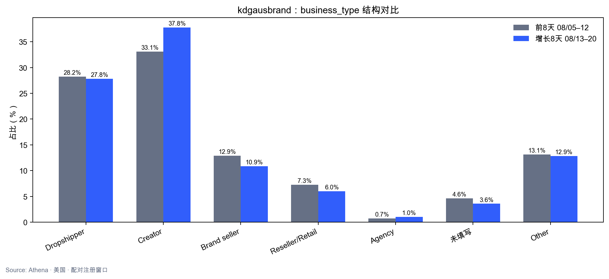
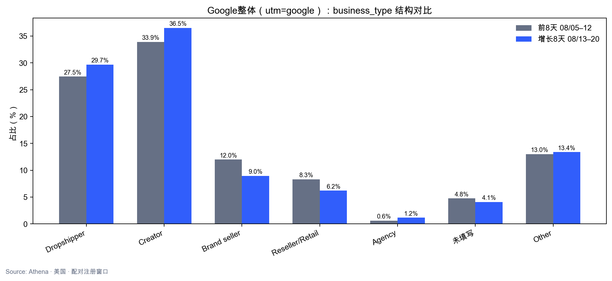
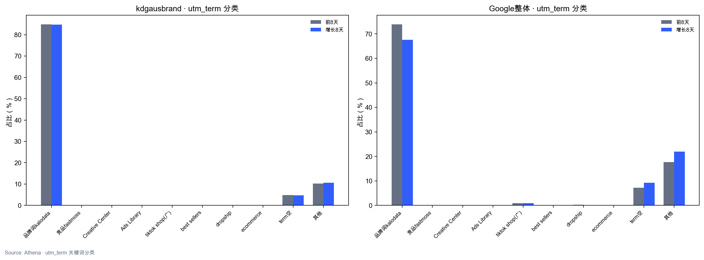
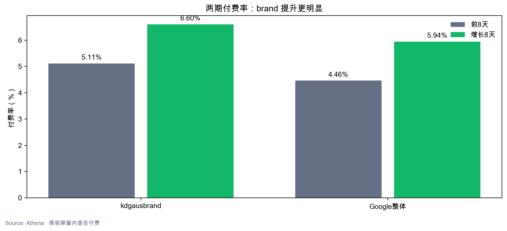

结论：部分支持。付费率确实改善（brand 5.11%→6.60%，Google 4.46%→5.94%），画像上 Creator 占比升、signup 直达率升、Dropshipper/Brand seller 转化改善；但 fastmoss/Creative Center/Ads Library 在注册 utm_term 几乎不可见，无法复现 Google 截图的搜索词故事。Google 整体 pipiads 竞品词用户 5.5%→11.8%，是更贴近数据的线索。
1. Google 声称 vs 数据
| Google说法 | 数据 | 判断 |
|---|---|---|
| fastmoss / Creative Center / Ads Library 上升 | 注册 utm_term 中均为 0%–0.1% | 不支持 |
| Dropship / Ecommerce 受众 | Google Dropshipper +2.2pp；brand 几乎不变 | 弱支持 |
| 受众更专业 | Creator +4.7pp；signup 路径 +10.7pp | 部分支持 |
| 竞品工具研究者 | pipiads 词用户 5.5%→11.8% | 部分支持（pipiads） |
2. kdgausbrand 画像变化
| 维度 | 前8天 | 增长8天 | 变化 |
|---|---|---|---|
| Creator | 33.1% | 37.8% | +4.7pp |
| Dropshipper 付费率 | 3.45% | 6.67% | 转化改善 |
| Brand seller 付费率 | 5.66% | 9.57% | 转化改善 |
| 首路径=/signup | 31.8% | 42.5% | +10.7pp |
| kalodata 品牌词 | 84.9% | 84.7% | 稳定 |

3. Google 整体
| 维度 | 前8天 | 增长8天 |
|---|---|---|
| 付费率 | 4.46% | 5.94% |
| pipiads 相关 term | 5.5% | 11.8% |
| kalodata 品牌词 | 73.9% | 67.6% |



4. 数分判断
- 转化改善是真实的，且 Dropshipper/Brand seller 分群付费率同步升——画像与结果方向一致。
- Google 截图里的 fastmoss/CC 无法用注册 utm_term 验证；口径是 Ads 展示量 vs 用户归因 term。
- brand 85% 仍是 kalodata 品牌搜索；「精准化」更体现在转化率和卖家属意，而非搜索词结构巨变。
- pipiads 竞品词在 Google 整体翻倍，建议与 Ads search terms report 交叉验证。